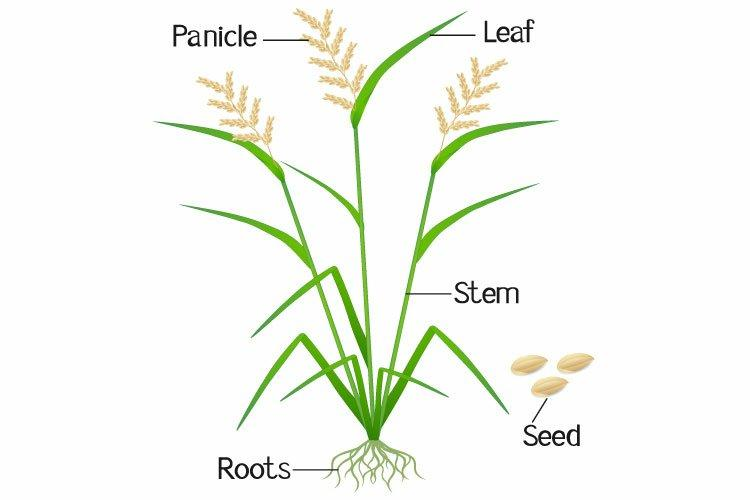
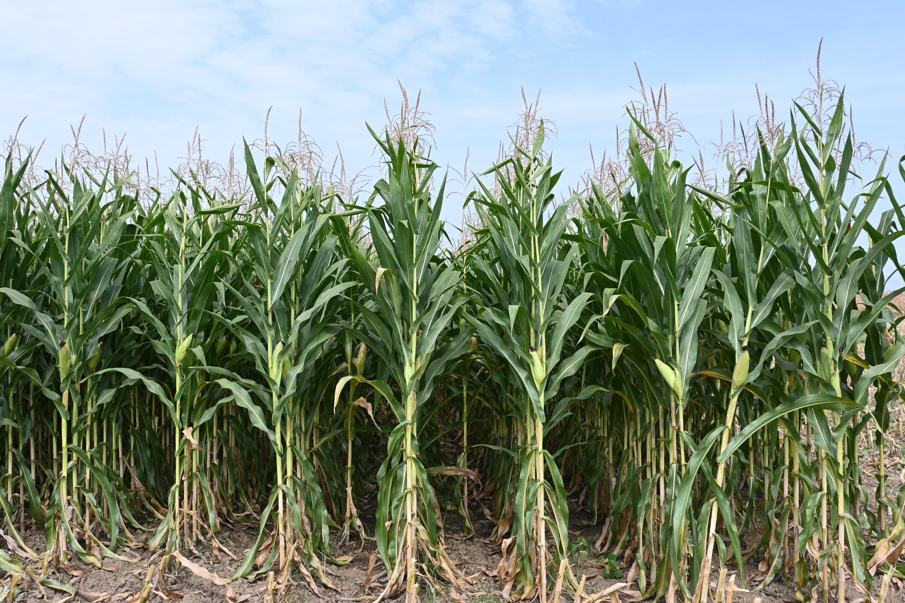
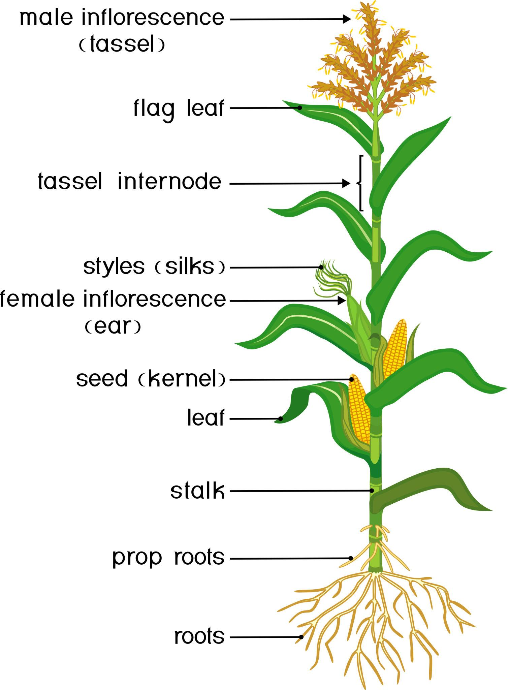
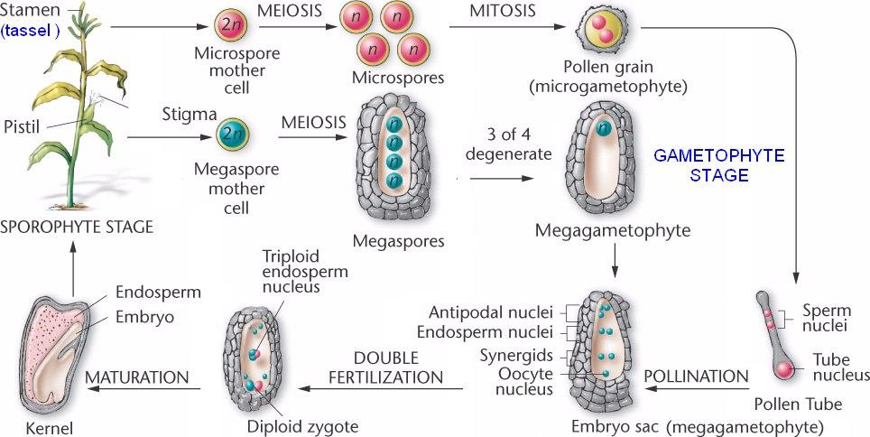

GRAMINEES


PROBLEME RESOLU: protéger et disperser la graine, améliorer la pollinisation
Les graminées appartiennent au groupe des plantes à fleurs, appelé angiospermes. Elles possèdent des fleurs et produisent des
graines enfermées dans des fruits.
Leurs fleurs sont souvent discrètes et adaptées à la pollinisation par le vent.
Cette stratégie permet à leur pollen d'être transporté sans dépendre nécessairement des insectes.
APPAREIL VEGETATIF

Les graminées possèdent généralement un système racinaire fasciculé, composé de nombreuses racines fines.
Leur tige est souvent appelée chaume et présente
des nœuds et des entre-nœuds. Les feuilles sont généralement longues, étroites et disposées en deux rangées le long de la tige.
Elles possèdent une nervation parallèle caractéristique. Cet appareil végétatif leur permet de croître dans des milieux variés et de produire une biomasse importante.
CYCLE DE REPRODUCTION

Le maïs porte des fleurs mâles regroupées dans la panicule située au sommet de la plante et des fleurs femelles regroupées dans l'épi.
Les fleurs mâles produisent le pollen qui est transporté par le vent jusqu'aux soies de l'épi. Après la pollinisation, le pollen germe et permet la fécondation de l'ovule.
Chez les angiospermes, cette fécondation est double et conduit notamment à la formation de l'embryon et de l'albumen.
L'ovule fécondé devient une graine et l'ovaire se transforme en fruit. Le grain de maïs est donc un fruit sec contenant une graine.